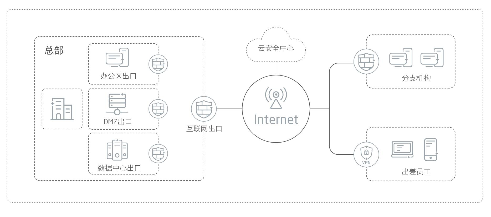

产品概述
赛博特安下一代防火墙是高性能、智能化下一代防火墙。其通过模块化设计，集防火墙、VPN、DoS/DDoS攻击防御、入侵防御、防病毒、反垃圾邮件、URL过滤、应用协议识别与控制等多项尖端安全技术于一身，为用户提供业界领先的一体化边界安全解决方案。
应用价值
赛博特安防火墙可部署于互联网出口和内网边界，实施访问控制、攻击防御、入侵防御、智能选路、身份认证、带宽管理、企业分支互联等安全措施，为用户提供安全、稳定、健壮的网络环境。
产品亮点
高性能、小空间、低功耗，高性价比的安全保护
单板三层吞吐性能高达160G。最高IPS检测能力高达80G。最高并发50,000,000。单板接口密度最高可达32口，更节省空间。160G三层吞吐功率仅为760W，更节能。
云安全中心联动，大幅提升检测能力，有效应对未知威胁
赛博特安提供强大的云安全中心，允许用户提交可疑文件及URL至云端检测，全面应对未知威胁。安全中心通过人工智能手段，综合分析全球在网设备上传的大量数据，形成多种信誉库与特征库。您可从云端同步信誉库和特征库到本地，大幅度提升设备在本地的检测能力和速度。
电信级高可靠，获得最稳定持续的保护
设备级、部件级、链路级、接口级、逐级高可靠设计，更稳定。
灵活、安全的VPN解决远程连接的安全性问题
IPSec VPN、 SSL VPN 和 GRE VPN 三合一，支持多种部署方式，选择更灵活。自主研发的VPN客户端，支持多种操作系统，方便又安全。支持多重认证方式，支持国密办加密算法和国际通用加密算法，数据安全无懈可击。
极强的网络适应性，可按照需求随心部署
支持多种方式接入网络，满足绝大多数部署需求。智能的路由选路，丰富而灵活的接口组合，不惧网络环境变化。全面支持IPv6，自如应对IPv6安全挑战。
智能高效管理，减轻管理员负担，降低运维成本
支持智能学习、智能路由、基于智能客户端的监控等一系列功能，极大地减轻了管理员的负担，提升了工作效率，降低了运维成本。
应用场景
